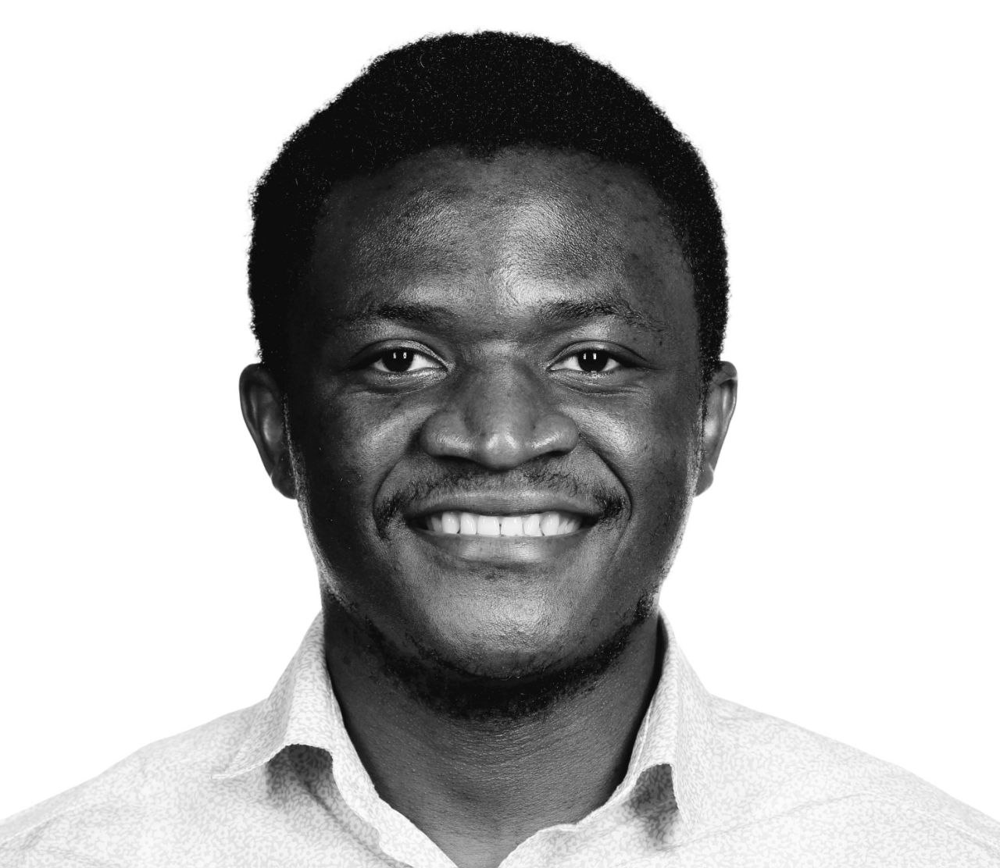

Patrik Kenfack

Hey, I’m Patrik 👋🏿
PhD Candidate in Computer Science · ÉTS Montréal & Mila
I study bias mitigation in machine learning under constraints on sensitive information — what fairness can mean when you cannot see, or are not allowed to use, the attributes you would need to measure it. I am advised by Ulrich Aïvodji and Samira Ebrahimi Kahou.
I recently completed a Mitacs internship at Layer6 AI, where I worked on designing fair tabular foundation models. Before ÉTS Montréal I was a research assistant at the Machine Learning and Knowledge Representation Lab at Innopolis University, advised by Adil Khan, working on fairness in ensemble learning, GANs, continual learning and representation learning. I hold an MSc in Computer Science and a BSc in Mathematics and CS from the University of Dschang.
Research interests
News
-
Jun2026
I presented our recent paper Training Fair Tabular Foundation Models at FMSD @ ICML 2026; Accpeted as spotlight oral.
-
May2026
Reviewing for workshop Foundation Models for Structured Data @ ICML 2026
-
Apr2026
Recipient of the ETS internal scholarship
-
Mar2026
Reviewing for ACL 2026.
-
Fev2026
Reviewing for FAcct.
-
Jan2026
Our paper Towards Fair In-Context Learning with Tabular Foundation Models is accepted at TMLR
-
Jan2026
Reviewing for CVPR
-
Nov2025
-
Nov2025
Our paper Adaptive Group Robust Ensemble Knowledge Distillation is accepted at TMLR
-
Jun2025
Our paper Towards Fair In-Context Learning with Tabular Foundation Models is accepted at ICML 2025 FMSD workshop
-
May2025
Our recent paper Towards Fair In-Context Learning with Tabular Foundation Models is out!
-
Mar2025
Secured second place for the 3-Minute Research Presentation Contest at the 2025 ETS student researcher conference
-
Mar2025
-
Feb2025
Reviewing for FAcct.
-
Oct2024
Our paper Adaptive Group Robust Ensemble Knowledge Distillation was accepted at Neurips2024 AFME workshop.
-
Aug2024
Our paper Fairness Under Demographic Scarce Regime was accepted at TMLR.
-
Aug2024
Invited to serve as a reviewer at ICLR 2025.
-
Jul2024
Invited to provide an emergency review at Neurips 2024.
-
Jun2024
Our Survey on Fairness Without Demographics was accepted at TMLR.
-
Apr2024
Selected to join the Mila EDI committee.
-
Jan2024
Reviewer for FAcct.
-
Aug2023
Our TISL lab team won a $10,000 prize at the 2023 Kaggle AI Report Competition. Our report, Exploring the Landscape of AI Ethics, secured first place in the AI Ethics category.
-
Mar2023
Reviewer for ICCV 2023.
-
Apr2023
Awarded the Excellence Scholarships – EDI in Research from Mila, supporting equity, diversity, and inclusion in AI research.
-
Feb2023
Reviewer for FAccT 2023.
-
Jan2023
Presented our work Learning Fair Representations Through Uniformly Distributed Sensitive Attributes at SaTML 2023.
Happy to talk about research or potential collaborations — reach me on LinkedIn or at kenfackjoslin@gmail.com.